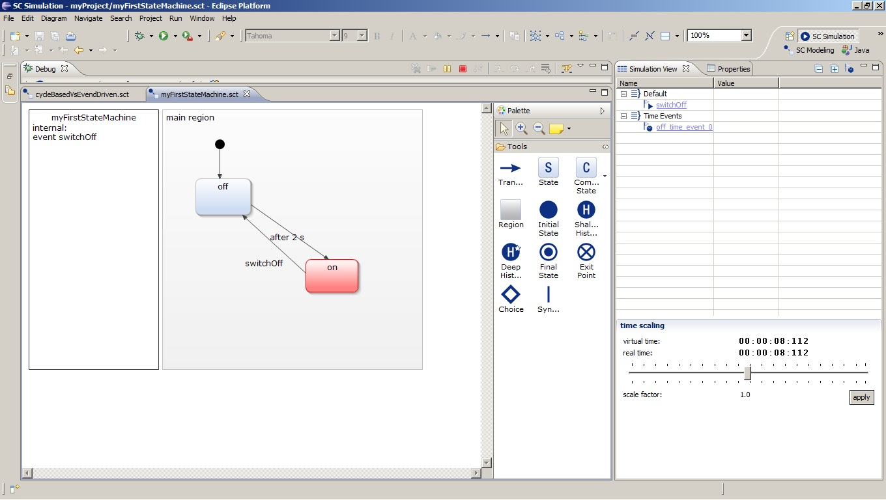

The Yakindu Statechart Tools 2 are built upon Java and Xtext. So you need to have installed a Java Runtime Environment and Xtext installed. The easier way to get this is to install the pre configured Xtext contribution.
The Yakindu Statechart Tools 2 need Eclipse Indigo 3.7 or higher and Xtext 2.0.1 exactly (no higher) to work correctly.
You install the Yakindu Plug-Ins from the update site: http://updates.yakindu.com/indigo/milestones.
The Xtext integration utilities provide Xtext functionality for Yakindu. Additionally to the base integration it also provides GMF and JFace integration. For more details check the documentation XGI and XJI.
You can select what code generators you need (Yakindu SCT 2) and if you need the Yakindu SCT2 SDK (for developers). For users only the Yakindu SCT 2 is sufficient.
For state machine modeling purposes open the Yakindu SC Modeling perspective by clicking Window > Open Perspective > SC Modeling. This perspective is optimized for statechart modeling. It consists of

To simulate a state machine use the Yakindu SC Simulation perspective by clicking Window > Open Perspective > SC Simulation. This perspective is optimized for simulation purposes and consists of:

In the context of model driven software development generators play an important role. The generator transforms the model to either another model or text like code. Yakindu generators support multiple transform languages. One is Xpand. By clicking File > New > Other... > YAKINDU Xpand Generator Project you create a project optimized for writing a generator in Xpand. For more details regarding Xpand see: Xpand documentation.

All you need to do is to give it a speaking name and click Finish. The setting Configure for Plugin Export is an option for plugin developers.
The newly created project has a package with an Xpand starting point: the Main.xpt. This file the includes the needed metamodels. It has the entrance Xpand statement that iterates all states in the model and prints the names in a text file.
The generator that transforms the state machine model into code or documentation can be written in Xtend2 and Java. Find a detailed description on Xtend2 in the Xtend2 documentation. Yakindu comes with a predefined project setting for such projects. To create such a project click File > New > Other... > YAKINDU Xtend2/Java Generator Project.

Give the project a speaking full qualified name and name also the generator java class with a full qualified name. If you also want to use Xtend select Use Xtend. The result is a new project with an initial Xtend file and java class.
With the YAKINDU Statechart editor you create or modify state models. The editor automatically opens on .sct files. To create a new YAKINDU statechart model click File > New > Other... > YAKINDU Statechart model. Give it a speaking name and click Finish. The newly created model opens in the statechart editor. Also the SC Modeling perspective opens.

The editor consists of three parts:
You can use the textual modeling field to define internal behavior of states and declare events or variables. The language used here is called SText. The SText reference explains this language.
Elements that cause problems get warning and error markers attached. For more details about the problems open the Problems View.
The simulation view is an interactive view to watch and control the state machine simulation. To get it open the simulation perspective.
Start a simulation by clicking Run > Run.

During the simulation in the statechart editor the active state gets a red color. The previous transition is green. The simulation view shows the events that trigger the states. You can change values here to trigger events. Beneath the table there are two clocks. One for the virtual time and one for the real time and a slider to change virtual time.
You can also select an event driven or cycle based run configuration.
YAKINDU model projects are associated with the YAKINDU SCT nature. For general information regarding natures read the project nature documentation. On projects with YAKINDU SCT nature .sct and .sgen files are automatically build and checked for problems. So you get fast feedback during editing. You can toggle the SCT nature by right clicking Configure > Add or Remove YAKINDU SCT Nature on the project.
XGI is an Xtext integration for GMF (=Xtext GMF integration). Technically the statechart editor builds on the Graphical Modeling Framework (GMF). Xtext is an eclipse framework for textual modeling languages. Xtext provides comfortable functionality like syntax highlighting, code completion, live validation and more. XGI adds these features to SCT editor fields. The result is the following:

XJI is an Xtext integration for JFace e.g. fields in the Properties View. It adds Xtext editor functionality like syntax highlighting, code completion, live validation and others to these fields. This can be a great help especially for new users to YAKINDU SCT.